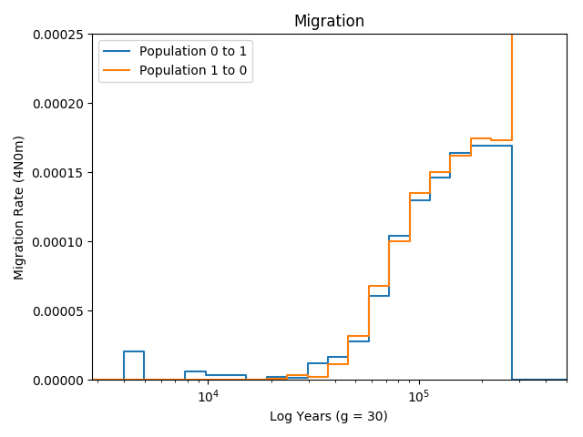
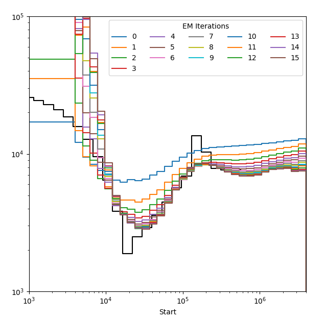

API Documentation¶
Format Conversions¶
-
smcsmc.utils.ts_to_seg(path, n=None)[source]¶ Converts a tree sequence into a seg file for use by
smcsmc.run_smcsmcs(). This is especially useful if you are simulating data frommsprimeand would like to directly use it insmcsmc. For details of how to do this, please see the tutorial on simulation usingmsprime.Provide the path to the tree sequence, and the suffix will be replaced by
.seg. This code is adapted from PopSim.
-
smcsmc.utils.vcf_to_seg(vcfs, masks, minsize=1000)[source]¶ Takes given samples from given VCFs and creates seg files for input to
smcsmc.run_smcsmc().Input VCFs do not have to phased, but you should be aware that if they are not, this will decrease the effectiveness of the lookahead likelihood.
Provide a list of VCFs to merge together and masks for each individual in bed format.
Plotting¶
-
smcsmc.plot.plot_migration(input='result.out', output='result.png', g=30, ymax=0.00025)[source]¶ Plot the migration between two groups.
The function pulls from the input, which must be some sort of aggregated output from
smcsmc, and plots the migration rate over time for a given generational timeg, which scales the number of generations to years. The Y axis (which can be modified with theymaxparameter) represents \(m_{ij}\), or the proportion of population j being placed by migration from population i backwards in time. This is important, as most intution about migration is understood forward in time.This is a barebones function and there is no option to provide a “truth” bar. See the other plotting functions for various definitions of “truth”.
As an example, here is the resulting (symmetric) migration from a simulation:
- Parameters
input (str) – This must be the file path to some sort of aggregated output from
smcsmc. This means that it can be either achunkfinal.outorresult.outbut not an individual chunk. We need all the data here.output (str) – Filepath to save the plot.
g (int) – The length of one generation in years. This is used to scale the x axis.
ymax (float) – The maximum y value to plot. This is used to scale the plots up or down.
-
smcsmc.plot.plot_rainbow(input, output, g=30, model=None, steps=None, pop_id=1)[source]¶ Creates a plot of all iterations by colour. This plot is useful for assessing convergence.
- Parameters
input (str) – The full file path to an aggregated output file from
smcsmc.output (str) – Filepath to save the plot.
g (int) – The length of one generation in years. This is used to scale the x axis.
model (stdpopsim.Model) – Model for plotting.
ymax (float) – The maximum y value to plot. This is used to scale the plots up or down.
steps (int) – Don’t worry about this.
pop_id (int) – If your model includes multiple populations, which one do you want to plot?

-
smcsmc.plot.plot_with_guide(input, guide, output, g=30, ymax=0.00025, N0=14312)[source]¶ This function is very similar to
smcsmc.plot.plot_migration()except that it includes the ability to add a bar of “truth”. In this case, the function uses a specific form of “truth” generated from recording all epochs output bySCRM. Additionally, we provide both the effective population size and the migration rates.The structure of the truth guide is like so:
Start Time
Pop_1 Ne
Pop_2 Ne
Pop_1 M
Pop_2 M
0
3
3
6
2
100
0.65
0.3
14
0
…
.
.
.
.
10000
0.4
0.4
8
6
Saved as a CSV file for the
guideargument.Todo
This function is part of a WIP tutorial on simulating with
SCRM. More details and convenience functions to come.- Parameters
input (str) – The full file path to an aggregated output file from
smcsmc.guide (str) – The full file path to a CSV formated as above with the truth of a simulation.
output (str) – Filepath to save the plot.
g (int) – The length of one generation in years. This is used to scale the x axis.
ymax (float) – The maximum y value to plot. This is used to scale the plots up or down.